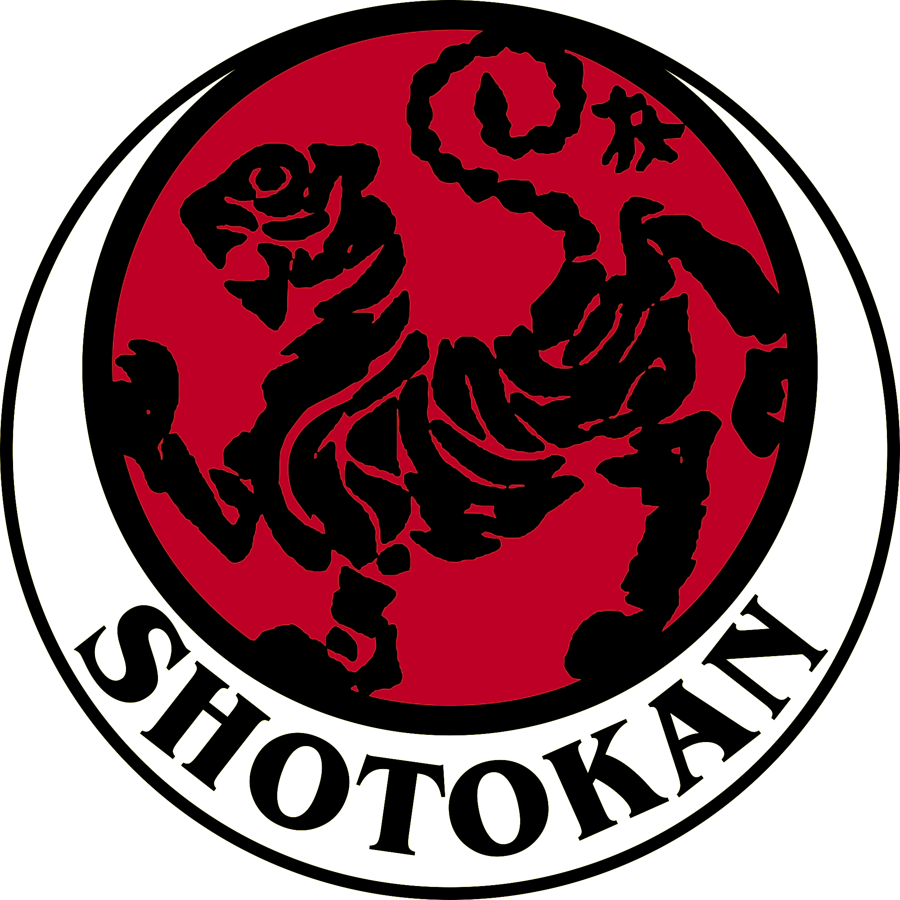
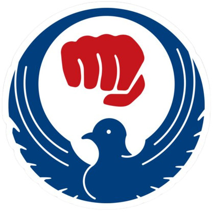
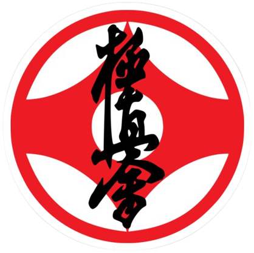

Origem
O karatê de Okinawa tem suas origens nas artes marciais chinesas, que foram introduzidas na ilha no século XIV. Essas artes marciais, como o kung fu e o wushu, foram adaptadas para as condições específicas de Okinawa, que é uma ilha pequena e montanhosa.
Estilos mais populares no Brasil
- 
- 
- 
Shotokan
O Shotokan é um estilo de karate fundado por Gichin Funakoshi, em Okinawa, no Japão, no século XIX. Funakoshi estudou com vários mestres de karate, e combinou as técnicas que aprendeu para criar um estilo moderno e eficaz. O estilo é caracterizado por uma combinação de técnicas de golpes, bloqueios e esquivas. O estilo também enfatiza o desenvolvimento da força, da flexibilidade e da concentração. O Shotokan é o estilo de karate mais difundido no mundo, com milhões de praticantes em todo o planeta. Ele é praticado por pessoas de todas as idades e níveis de habilidade.
Wado-Ryu
O wado-ryu é um estilo de karatê criado pelo mestre japonês Hironori Otsuka, em 1932. O estilo é baseado em técnicas de esquiva e contra-ataque, e enfatiza o uso da força do adversário contra ele mesmo. Uso de esquivas: o wado-ryu enfatiza o uso de esquivas para evitar os ataques do adversário. Contra-ataques: o wado-ryu também enfatiza o uso de contra-ataques, que são golpes executados imediatamente após a esquiva de um ataque. Influência de artes marciais: o wado-ryu incorpora técnicas de artes marciais, como o jiu-jitsu.
Kyokushin
O kyokushin é um estilo de karatê full contact, criado pelo mestre japonês Masutatsu Oyama em 1957. O estilo enfatiza o uso de golpes poderosos e diretos, e busca desenvolver a força, a resistência e o espírito de luta dos praticantes. Algumas características do kyokushin: Full contact: o kyokushin é um estilo de karatê full contact, o que significa que os golpes são aplicados com força real, até o nocaute. Golpe poderosos e diretos: o kyokushin enfatiza o uso de golpes poderosos e diretos, como socos, chutes e joelhadas. Desenvolvimento físico e mental: o kyokushin busca desenvolver a força, a resistência e o espírito de luta dos praticantes.
FAQ
- Quais são os requisitos para começar a praticar karatê no Brasil?
- Os requisitos básicos geralmente incluem idade mínima, disponibilidade para treinos regulares e o interesse em aprender os princípios do karatê. Cada dojo (escola de karatê) pode ter requisitos específicos.
- Como escolher a melhor escola de karatê no Brasil para minha prática?
- Ao escolher uma escola de karatê, é recomendável considerar a reputação do instrutor, a filosofia da escola, a proximidade do local de treino, os horários disponíveis e a ênfase dada aos aspectos técnicos, éticos e filosóficos do karatê.
- Quais são os benefícios do karatê para crianças?
- O karatê oferece diversos benefícios para crianças, como o desenvolvimento da disciplina, coordenação motora, autocontrole, respeito pelos outros e aumento da autoconfiança. Além disso, a prática regular do karatê ajuda na melhoria da saúde física e mental.
- Existem competições de karatê no Brasil e como posso participar?
- Sim, o Brasil possui diversas competições de karatê em diferentes níveis, desde eventos locais até competições nacionais. Para participar, é necessário estar vinculado a uma federação ou associação de karatê reconhecida e seguir os procedimentos de inscrição estabelecidos por essas organizações.
Contato
- contato@karatebr.com
- +81 (03) 9999-9999
- Rua do Sol Nascente, nº 81
- Naha - Okinawa